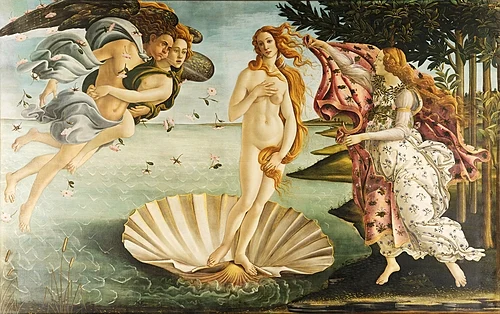
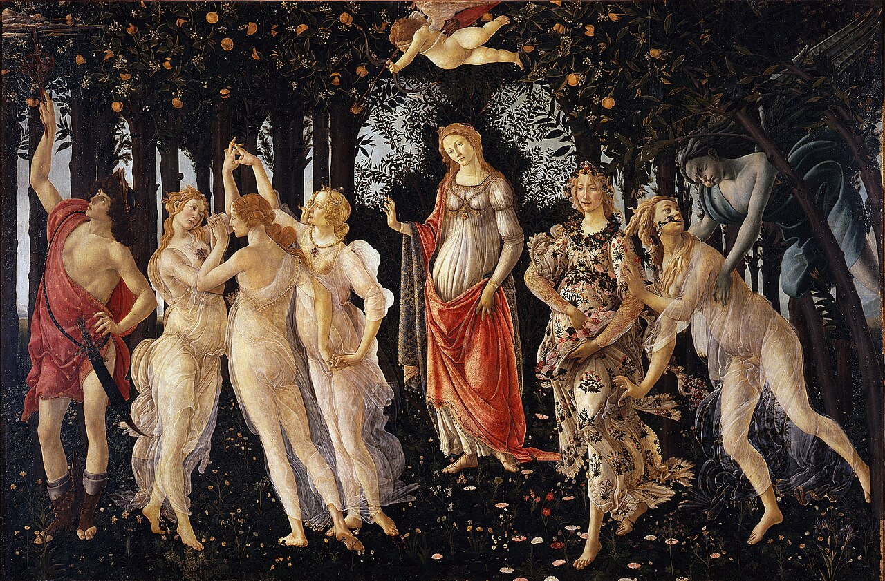
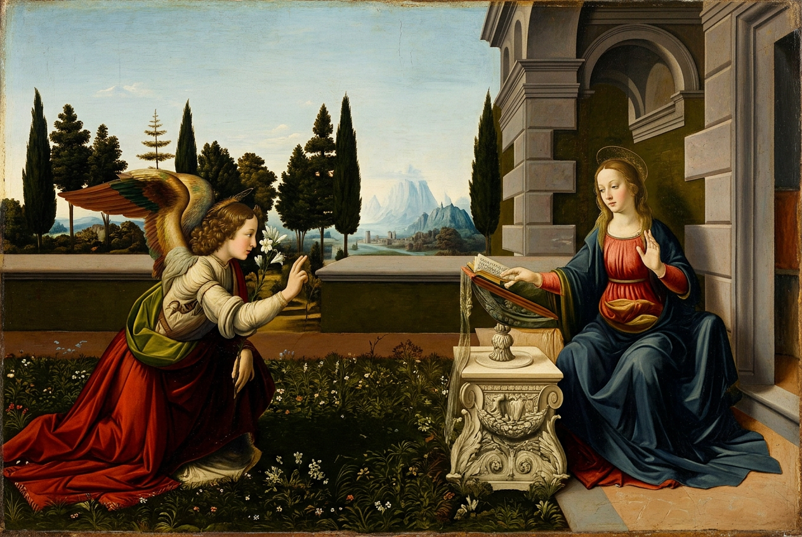
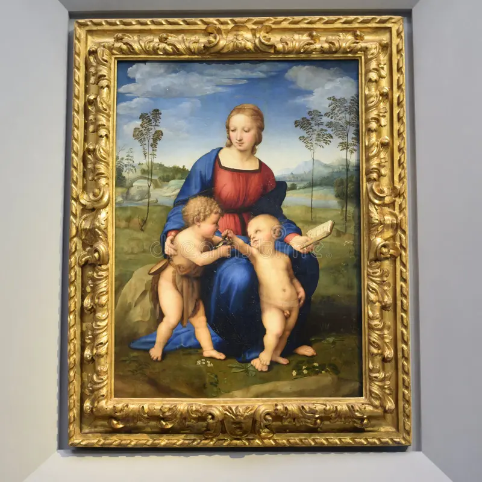
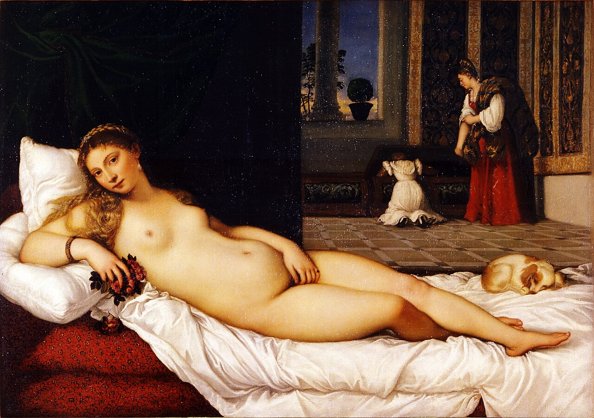
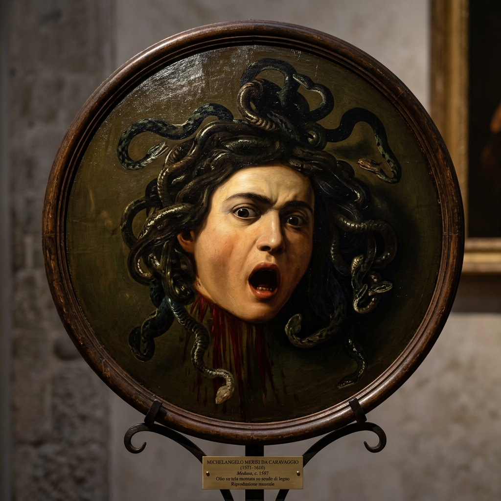
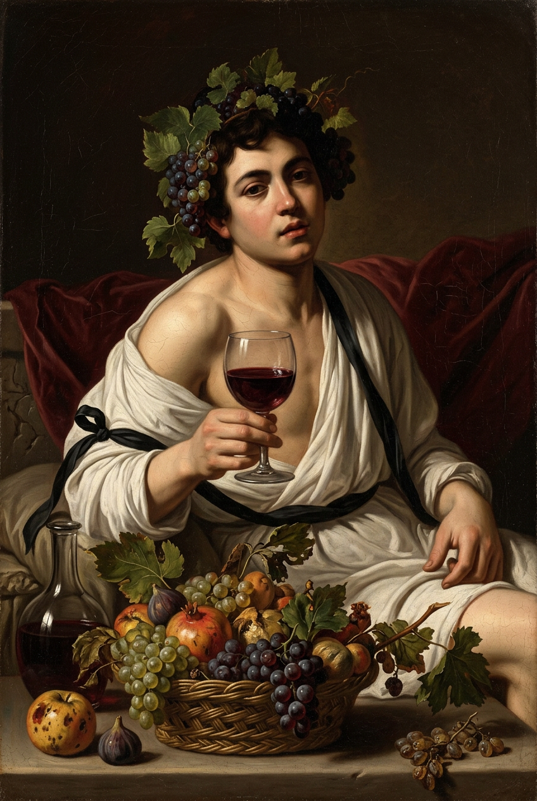

二楼 · 主展厅

Room 10-14 · 波提切利大厅
维纳斯的诞生
La nascita di Venere · 约1484
波提切利
镇馆之宝。维纳斯从贝壳上诞生，真迹 172×278cm。

Room 10-14 · 波提切利大厅
春
La Primavera · 约1477
波提切利
与《维纳斯》面对面。500多种植物、190朵花，三美神翩翩起舞。

Room 35 · 达芬奇厅
天使报喜
Annunciazione · 约1472
达·芬奇
达芬奇 20 岁作品。翅膀参照真鸟翼，背景用空气透视法。

Room 38 · 米开朗基罗厅
多尼圆形画
Tondo Doni · 约1507
米开朗基罗
唯一完成的木板画。圆形构图，镀金原框也是珍品。

Room 66 · 拉斐尔厅
金翅雀圣母
Madonna del Cardellino · 约1506
拉斐尔
最温柔的圣母像。曾震碎17块后修复，至今可见裂痕。

Room 83 · 提香厅
乌尔比诺的维纳斯
Venere di Urbino · 1538
提香
西方最著名裸体画之一。马奈《奥林匹亚》的直接灵感来源。
一楼

Room 90 · 卡拉瓦乔厅
美杜莎
Medusa · 约1597
卡拉瓦乔
画在凸圆木盾上。据说用自己的脸做模特。

Room 90 · 卡拉瓦乔厅
酒神巴克斯
Bacco · 约1596
卡拉瓦乔
微醺酒神邀你共饮。X光发现藏着自画像。